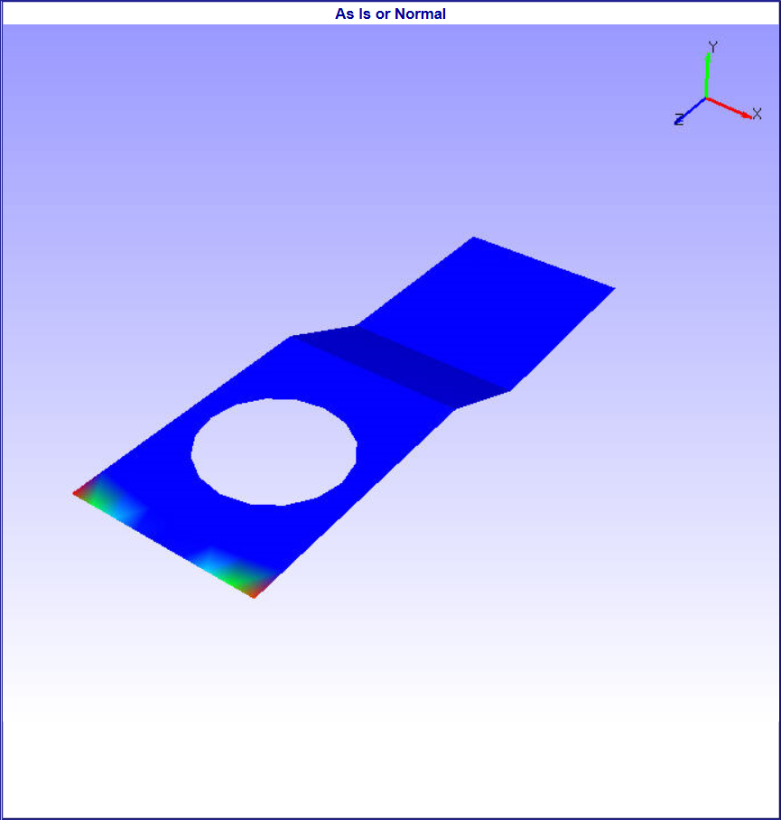
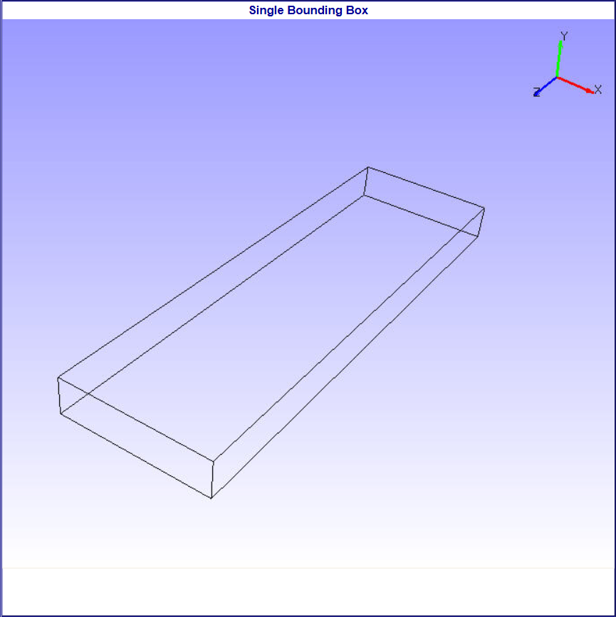
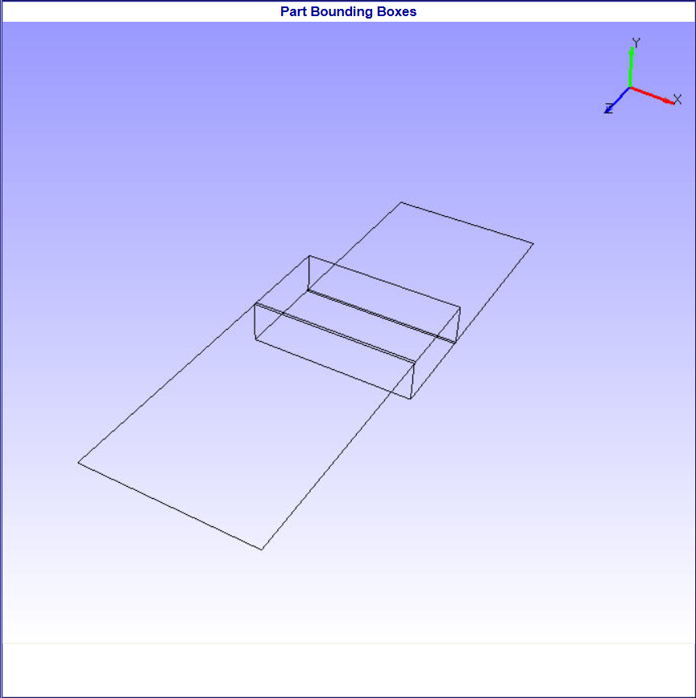
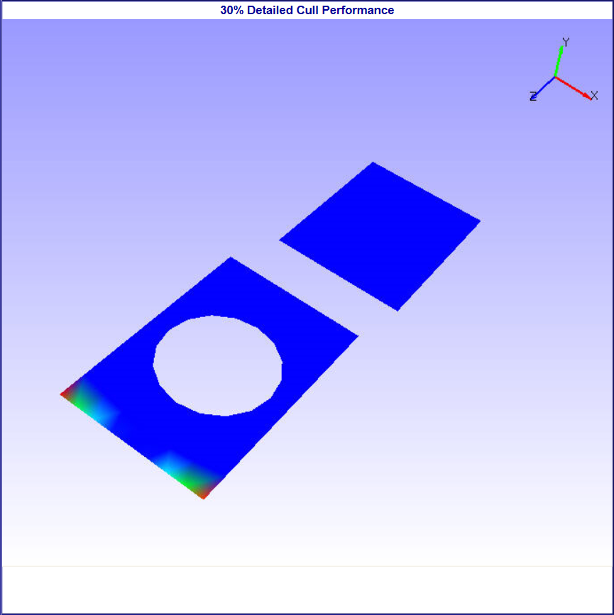
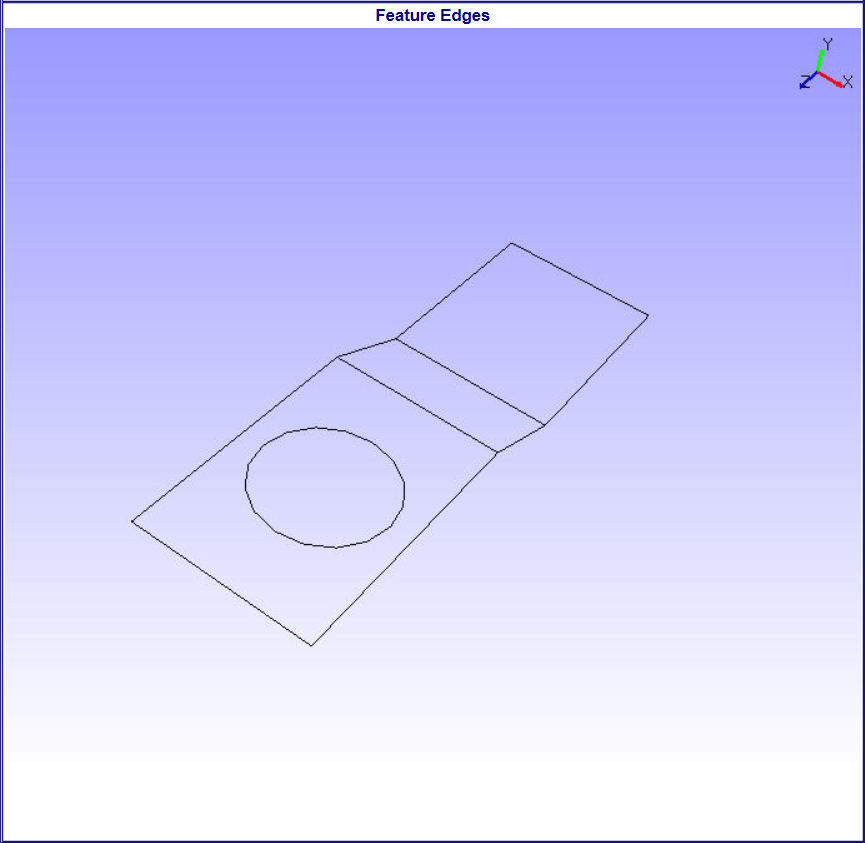

Move Model As¶
This option helps user to set different performance modes of rendering while interacting scene through motion model. These helps to improve performance during motion model.
Options
As Is
This is default one and helps user to change from any other performance mode to current display mode.
Single Bounding box
A single bounding box which contain all parts of model is displayed in motion model.
Part Bounding boxes
Individual bounding boxes are displayed for each part in motion model.
Detail culled
This helps user to view parts based on volume of all parts. User can view parts which are equal or less or above volumetrically with model volume. The default detail cull percentage is 30%. User can change this using ‘Detail Cull Settings’ option.
Feature Edges
Shows model feature edges during motion model.
    